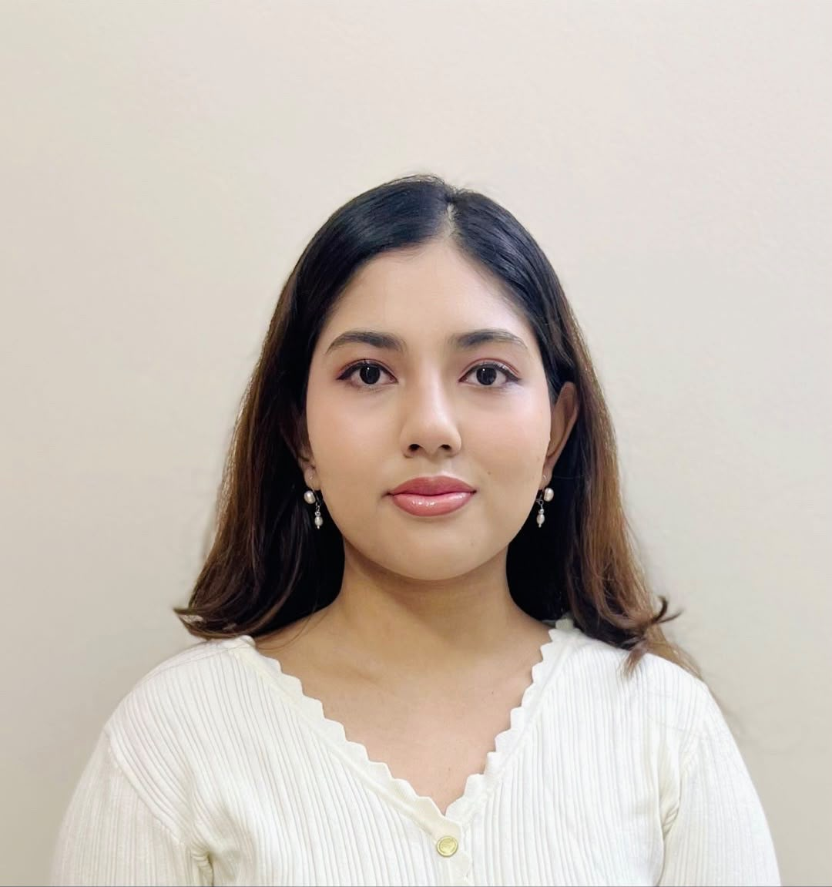
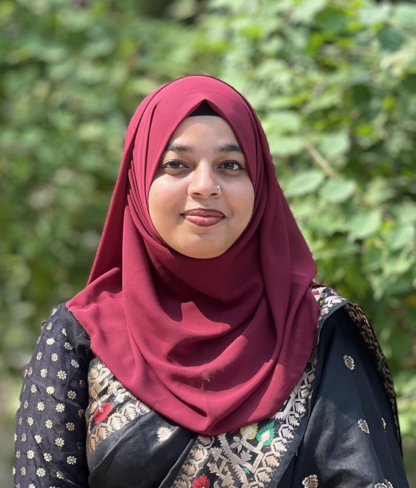
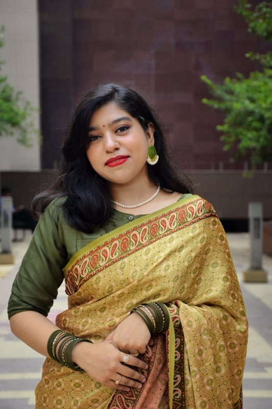

Lab Lead
Non-visual Effects of Light
Circadian rhythms, sleep, alertness, cognition and light exposure behaviour.
Members to be announced. Interested? See how to join.
Psychometrics
Adapting and validating instruments in Bangla and across cultures.
Research Assistant
Nowshin Tabassum
School of Business and Economics, North South University
Focuses on cultural adaptation and validation of measures of career and workplace experiences in Bangladesh.

Research Assistant
Sumaiya Alam Shreyoshi
School of Business and Economics, North South University
Focuses on Bangla psychological measurement of cognitive load, somatic symptoms, and social connectedness.

Mahirul Tasmin Arshi
School of Business and Economics, North South University
Focuses on Bangla psychological measurement of career adaptability, team psychological safety, and job satisfaction.

Nishat Tasnim Orthy
School of Business and Economics, North South University
Focuses on Bangla psychological measurement of cultural intelligence and moral disengagement.
Climate Change and Mental Health
Climate anxiety, heat, energy insecurity and coping in climate-vulnerable regions.
Research Assistant
Sumaiya Alam Shreyoshi
School of Business and Economics, North South University
Focuses on the psychological impacts of climate change, with a focus on mental health in Bangladesh.
Add photo
[Role]
[Member name]
[Affiliation]
[One line on their research focus]
Personality
Trait models, narrative identity and individual differences across cultures.
Members to be announced. Interested? See how to join.
Interested in joining?
We welcome students and collaborators in all four themes.